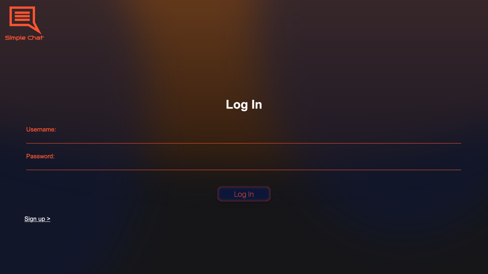
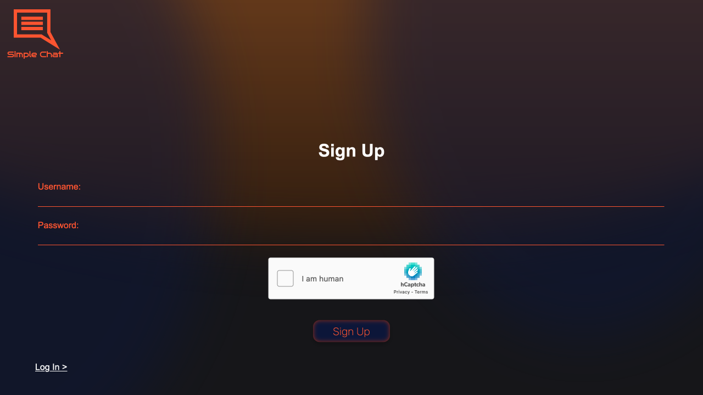
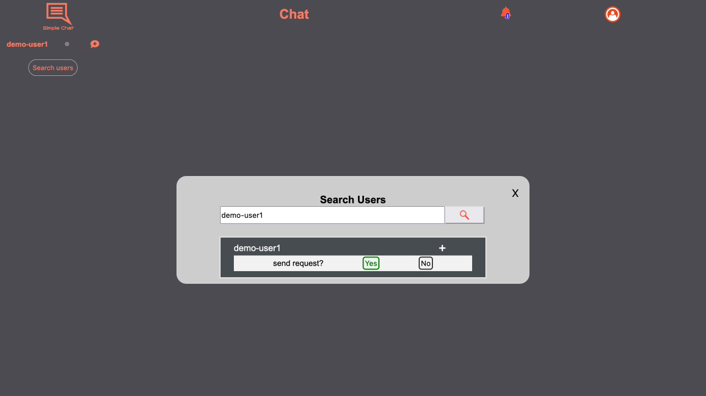
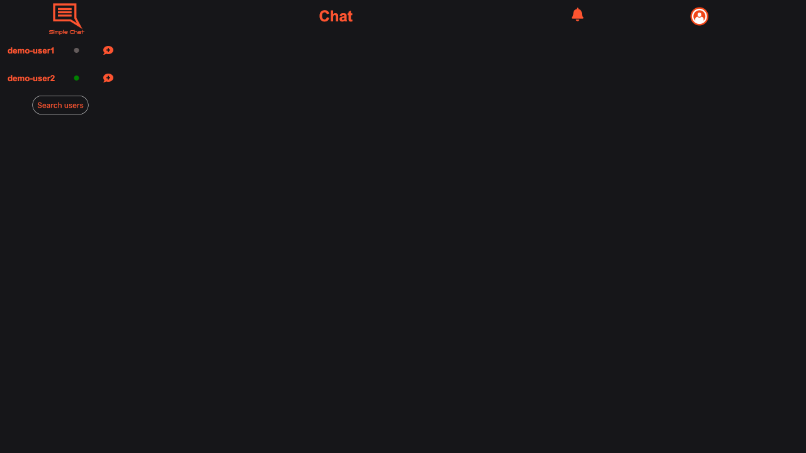
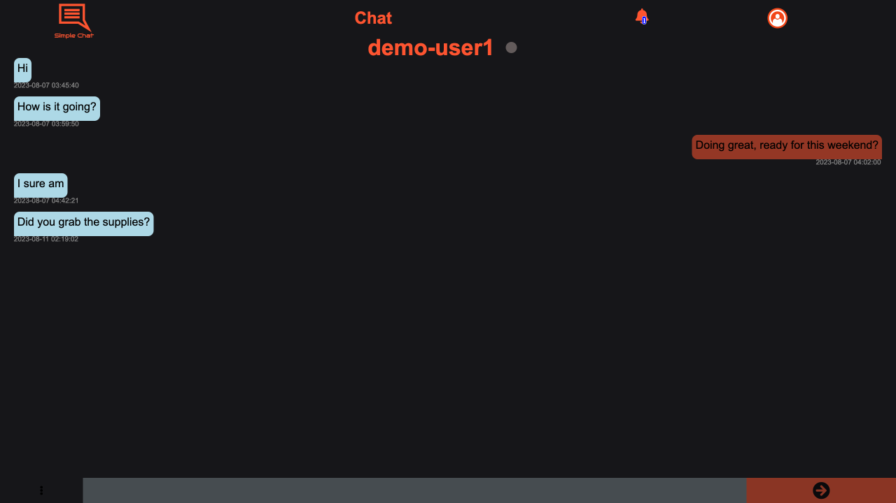
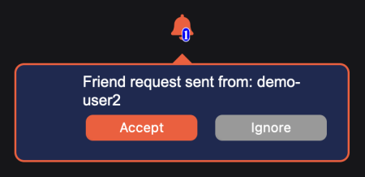
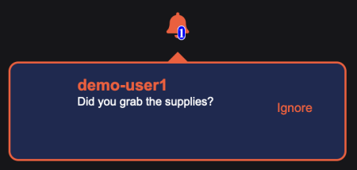

A very simple chat with private rooms, that allows for real time updates and messages. Users must sign up and add friends before messages can be sent.
The app is separated in 2 applications. Frontend built using VueJS, and the backend Django DRF, with both applications deployed on AWS Lightsail.
Features
User Log-in/Sign-up
Friends / Friend Requests
Realtime
- Notifications
- Chat
- User Status
Frontend
Vue JS / Vuex
Sass / SCSS
JavaScript
Backend
Django / DRF / Django Channels
Gunicorn
Daphne
MySQL
Redis
Cloud
AWS Lightsail
Nginx
Firebase
Simple Chat Features
User Accounts
Before allowing users to chat, Simple Chat requires users to sign up using both a Username and a Password, and completing the captcha challenge.
Once a user has sign up, the user is automatically redirected to the Dashboard.

Log-in Page

Sign-up Page
Friends
In order for users to be able to chat, either end of the party must first Search the other user by their username and Send a Friend Request that must be approved before a private chatroom can be created.

User search modal (only available on chat page)
Chat
Once 2 users are friends a chat can be started in the chat page, where a room will be created the first time a user clicks on a friend.
Once a chatroom is created, either user is allowed to send messages, that will be delivered in realtime if the other user is online.

Chat page where users can search users and find a list of current friends.

Chatroom
Notifications
Users may receive notifications in realtime. Currently the only 2 types of existing notifications are Friend Requests and New Messages

Friendrequest Notification

Message Notification - Notifications of this kind will not duplicate and will simply diplay the most recent message.
Architecture
The system is separated between two different applications. A Single Page Applications (SPA) built using VueJS and a Django application that serves as both a REST API and a Websocket API.
Frontend
The main reason for using VueJS is its reactivy and how well it complements the use of Websockets for realtime updates.
User Management
Most of the use cases in the system are handled by the Django Backend except for a very crucial case, user management.
Firebase Auth was selected as the intermediary middleware for user management on account of its robust security considerations. This alone completely removed the necessity for the system to directly manage the intricacies associated with the storage and retention of user credentials.
Dependencies
Vuex
Chosen for its ability to simplify cross component data modifications and updates. Used mostly for notifications and friend's status.
Firebase
Use as user management system. All forms of user authentication and authorization are handled by Firebase.
Axios
Used to simply API calls to the backend. Also chosen due to its Promised based design.
Vue Router
Chosen only for its ability to simplify page navigation from a developer perspective.
Sass
Neccessary to write SCSS inside Vue files.
Backend
Built using Django in conjuction with two major libraries Django Rest Framwork (DRF) to handle REST API and Django Channels for Websockets.
Django Rest Framework
DRF was utilized to implement features such as friend addition, user authorization (signup and login), leveraging Django's capabilities while adhering to REST principles.
Django Channels
Contrary to DRF Django Channels was employed to facilitate real-time message exchange and notifications, enabling seamless, asynchronous communication for timely updates within the application.
Cloud
The deployment of the application takes place on an AWS Lightsail Virtual Machine (VM), with Nginx serving as the load balancer. The Vue application is presented as a static file, while the Django backend is partitioned across dual processes. The REST API segment utilizes Gunicorn as the web server, while the WebSocket functionality is managed through Daphne layered on Django Channels to efficiently handle WebSocket connections.
Each of these three distinct processes is encapsulated within its own dedicated Unix service, thereby establishing a robust fault-tolerant framework to mitigate potential crashes. Moreover, this segregated architecture contributes to a streamlined deployment procedure, facilitating efficiency in the deployment lifecycle.